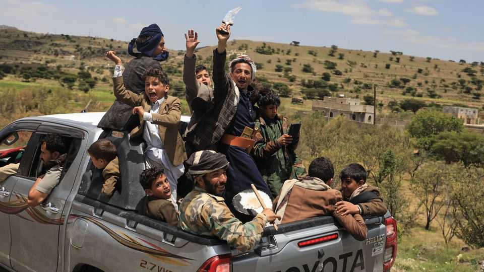

Iran’s allies now menace a second maritime choke point
But the Houthis have been here before, and lost it

Sep 17th 2026
IN THE SPRING of 2015 the Houthis, an Iran-backed rebel group, swept into the port city of Mokha on Yemen’s west coast. They put missiles on nearby Perim island, a rocky outcrop at the mouth of the Red Sea (see map). Gulf rulers feared the Houthis might use that foothold to threaten shipping through the Bab al-Mandab strait. The Gulf states’ Yemeni allies retook the island six months later. In 2017 the Houthis lost Mokha as well.
On September 10th the Houthis once again seized Mokha. Perim fell to them the next day. They faced little resistance: anti-Houthi forces fled the battle. It was their largest advance since 2022, when a ceasefire froze the front lines. They are now preparing offensives against the city of Taiz and on Marib, a north-eastern province and the hub of Yemen’s oil industry.

This is a humiliation for Saudi Arabia, the main foreign backer of the anti-Houthi coalition. It is also a boost for Iran in its war with America. With the Strait of Hormuz largely shut since February, the Red Sea has been a vital conduit for Saudi oil exports. Now Iran and its allies can threaten that waterway too. Brent crude climbed by more than 6% after the Houthi offensive, to over $109 a barrel.
Still, this is one battle in a civil war that has lasted 12 years and often trends towards stalemate. The Houthis have made swift advances before, only to find themselves unable to hold what they have seized. And the impact on oil markets may be partly offset by increased exports through Hormuz, where America’s navy has been escorting tankers to safety.
The Houthis spent years mobilising for this offensive. Iran helped equip them with drones, missiles and other modern weapons. In the run-up to the battle for Mokha, they made clever use of intelligence and propaganda, tapping the phones of anti-Houthi commanders and spreading fake withdrawal orders among the rank-and-file. Thinking they were real, fighters beat a disorganised retreat. Some sold their weapons on the roadside. The Houthis seized a stash of armoured vehicles, artillery and other kit from coalition bases.
While the Houthis prepared, their enemies fell into infighting. Some anti-Houthi factions are loyal to Saudi Arabia; others to the United Arab Emirates (UAE). But the two Gulf powers have become rivals in recent years as they pursued different foreign policies in Yemen and elsewhere. Last December Saudi Arabia forced the UAE to withdraw its troops from Yemen, leaving a rift within the coalition.
Yemeni sources complain that the Saudis were slow to offer air support when the fighting began: the kingdom has a modern air force but often struggles to use it effectively. Saudi Arabia has belatedly stepped up air strikes on Houthi positions, but its allies have yet to mount a serious counter-offensive on the ground. Meanwhile, the Houthis have launched numerous missile attacks on Saudi cities. On September 15th the kingdom said it intercepted a drone near Mecca, the holiest city in Islam.
Iran has reacted with glee. Kayhan, a hardline newspaper, said America had suffered “another defeat in the war of the waterways”. A planned summit between Gulf and Iranian diplomats on September 14th was postponed.
The Saudis are desperate for help. “This demands international support, not only from Saudi Arabia and regional countries,” wrote Abdulrahman al-Rashed, a columnist close to the royal court. They have received little. America has military advisers in Saudi Arabia to help with targeting, but Donald Trump declined requests from Muhammad bin Salman, the crown prince, to launch air strikes of his own. A long campaign would probably require him to divert one of two aircraft-carrier groups stationed near the Strait of Hormuz, weakening its blockade of Iranian ports.
Turkey and Pakistan signed a mutual-defence pact with Saudi Arabia in August, but neither looks eager to get involved. Nor is Egypt, whose president met Prince Muhammad on September 15th. Egypt has a stake in Yemen, since threats to Bab al-Mandab mean less revenue from the Suez Canal, a key source of hard currency. But it also has unhappy memories of fighting a long war there in the 1960s.
It was the Emiratis who pushed the Houthis back from Mokha in 2017: their Yemeni proxies tend to be more effective than Saudi Arabia’s, and their own army is more proficient. Better co-operation between the Gulf powers could make a real difference on the ground; so far, however, there are no signs of it.
The Houthi advance was not the only calamity to befall Saudi Arabia last week. On September 11th drone attacks forced it to close its main oil pipeline, which transports crude from fields in the east to ports in the west. The kingdom blamed Iraqi militias for the attack (though no one has claimed responsibility). It has now cancelled some scheduled deliveries to European customers, leaving them to scramble for alternative suppliers.
This looks like an enviable position for Iran: its allies can threaten the flow of oil both within Saudi Arabia and through the Red Sea. On the other side of the Arabian peninsula, though, more and more tankers are slipping through Hormuz under American protection. Some are making the journey in daylight, suggesting that Iran’s ability to hit moving targets has diminished.
The Saudis have already started to redirect exports. Vortexa, a ship-tracker, says they loaded 22m barrels of crude at the eastern port of Ras Tanura in the week to September 13th. Iran is tightening its hold on one strategic waterway just as America unwinds its grip on another. Both the war in Yemen and the wider war in the Gulf are far from over. ■